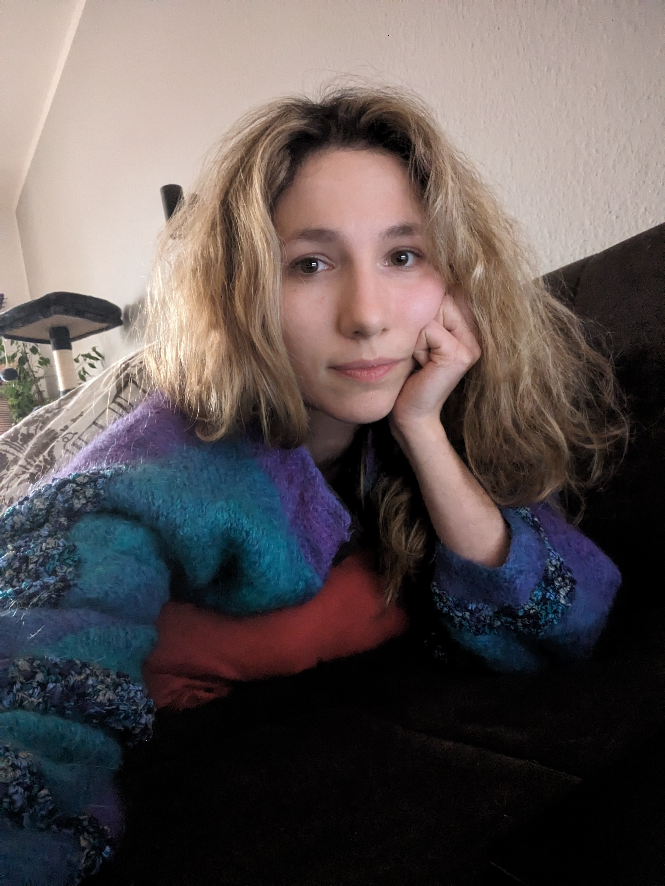
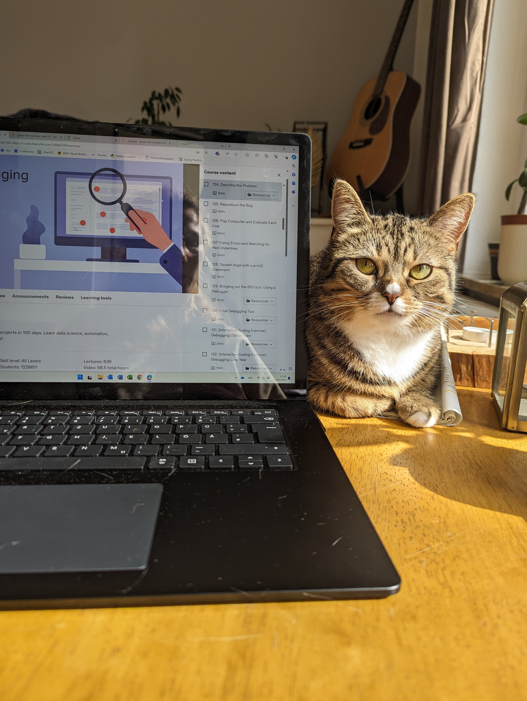

Dana Williams' CV

A violinist and licensed pharmacist with a passion for technology, currently transitioning into a career in IT.
Dedicated to mastering Python and web development while actively contributing as a Requirement Engineer at an IT company.
Seeking to leverage diverse skills and ongoing IT certification to excel in creating innovative solutions and driving technological advancements.
Education
Work experience
Languages
- Ukrainian (native)
- Russian (native)
- German (C2)
- English (C1)
Cats
- Lilah
- Djesse
